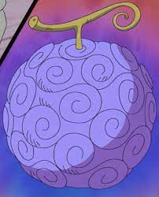
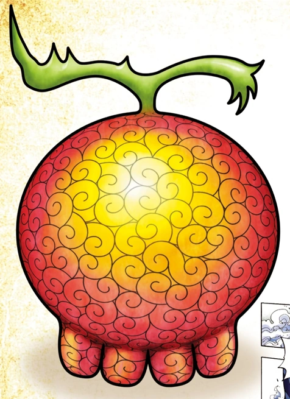

O que são as Akuma no Mi
As Akuma no Mi se tratam de frutas místicas e misteriosas que são encontradas pelo mundo de One Piece. Quem consumir uma delas ganha poderes e habilidades super-humanos, mas com um custo: a perda da habilidade de nadar (permanentemente).Acredita-se que as Akuma no Mi foram criadas por um demônio dos mares e que o segredo do poder delas está escondido em algum lugar da Grande Linha. Como são raras, muitas pessoas acreditam que elas são apenas um mito. Esse foi o caso de Nami, que só foi acreditar na existência delas após ver uma frente a frente.
Também pelo fato de serem raras, as Akuma no Mi são muito valiosas no mercado e os principais combatentes do mundo de One Piece já consumiram alguma para ficarem mais fortes. Uma delas chega a custar 100 mil Bellies, enquanto a Ope Ope no Mi chegou a ser avaliada em 5 milhões.
No entanto, muitas pessoas consideram que os poderes concedidos pelas frutas são uma espécie de maldição ou magia. Por conta disso, algumas pessoas que as consumiram costumam ser consideradas aberrações e não são muito bem vistas.
Apesar de serem frutas, aqueles que já comeram uma Akuma no Mi afirmam que seu gosto é terrivelmente ruim e seria semelhante a tomar algum tipo de veneno.
As Akuma no Mi possuem os mais variados tamanhos, formatos e cores. Uma característica comum delas é que possuem uma espécie de redemoinhos no seu exterior. A exceção são as frutas do diabo artificiais, que possuem círculos (ou anéis, se preferir) em seu exterior.
Basta dar uma única mordida na fruta para adquirir seus poderes e, logo em seguida, ela perde completamente a função. Ou seja: não é possível várias pessoas adquirirem o mesmo poder, dividindo a mesma fruta.
As Akuma no Mi também costumam afetar as roupas de quem as consumiu (não se esqueça que as roupas de Luffy jamais foram afetadas quando ele usa seus poderes) e até mesmo os arredores.
De acordo com o próprio Eiichiro Oda, o mesmo poder de uma Akuma no Mi pode existir ao mesmo tempo, mas duas frutas do mesmo tipo não podem estar presentes no mundo.
Uma pessoa pode usar apenas o poder de uma fruta. Caso tente consumir uma segunda, ela morre. A única exceção foi o pirata Barba Negra, que conseguiu usar o poder de duas ao mesmo tempo.
Se um usuário de algum poder de uma Akuma no Mi morrer, o poder renasce em uma fruta qualquer, que ganha a aparência da original. A exceção são as artificiais, que crescem em árvores.
Os tipos de Akuma no Mi
Paramecia: o tipo mais comum de Akuma no Mi. As Akuma no Mi Paramecia dão aos seus usuários poderes super-humanos, como é o caso de Luffy, que pode transformar seu corpo em borracha. Algumas delas também permitem modificar pessoas, objetos e os arredores, bem como gerar e manipular algumas substâncias.
Zoan: os usuários das frutas do tipo Zoan podem se transformar em híbridos de humanos e animais. Existem três divisões das Akuma no Mi Zoan. Zoan Antigo: o usuário se transforma em um animal extinto, como um dinossauro. Zoan Místico: o usuário se transforma em um animal mitológico, como é o caso de dragões. Zoan Artificial: o usuário ganha as características de um animal de forma permanente. No entanto, elas têm uma chance de apenas 10% de sucesso, já que se tratam das frutas artificiais.
elas têm uma chance de apenas 10% de sucesso, já que se tratam das frutas artificiais. Logia: o tipo mais raro de Akuma no Mi, mas também considerado o mais poderoso. Permite aos seus usuários criar e manipular elementos da natureza, sejam eles sólidos (como gelo), líquidos (como lama), gasosos (como fumaça) e aqueles que geram energia (como fogo e raios). Além disso, o usuário se torna intangível quando se transforma, pode controlar seu corpo mesmo se ele estiver em pedaços e ainda pode manipular coisas relacionadas ao seu elemento (por exemplo, fazer a eletricidade se mover por objetos condutores).
Ainda existem três frutas canônicas que não possuem uma classificação exata:
Tama Tama no Mi: dá ao seu usuário o poder de seu corpo ter a mesma composição de uma casca de ovo, que se for aberta, cria uma gema ainda mais forte na próxima oportunidade. A cada regeneração da casca, o usuário vai se transformando em um híbrido de homem e galinha. A fruta sem nome consumida por Laffitte, que lhe permite ganhar asas para voar. A fruta sem nome consumida por Karasu, que faz seu corpo e roupas se transformarem em corvos assassinos.
Zoan
Hito Hito no Mi: consumida por Tony Tony Chopper. Permite que um animal se transforme em um híbrido humano ou até mesmo em um humano completo.
Neko Neko no Mi (modelo leopardo): consumida por Rob Lucci. Faz o usuário se transformar em um híbrido de humano e leopardo.
Ushi Ushi no mi (modelo girafa): consumida por Kaku. O usuário se transforma em um híbrido de humano e girafa.
A fruta sem nome consumida por Kaido: permite ao seu usuário se transformar em um dragão azul.
Komori no SMILE: consumida por Batman. Faz o usuário ganhar os atributos de um morcego. Ela é artificial.
Logia
Moku Moku no Mi: consumida por Smoker. Faz seu usuário criar, controlar e se transformar em fumaça.
Mera Mera no Mi: consumida por Portgas D. Ace e, depois, por Sabo. Faz seu usuário criar, controlar e se transformar em fogo .
Suna Suna no Mi: consumida por Crocodile. Permite ao usuário criar, controlar e se transformar em areia. 
Goro Goro no Mi: consumida por Enel. Permite ao usuário criar, controlar e se transformar em eletricida
As Akuma no Mi mais conhecidas de One Piece
Gomu Gomu no Mi: a Akuma no Mi que Luffy consumiu. Como sabemos, deu ao protagonista o poder de esticar seu corpo como borracha .
Hana Hana no Mi: consumida por Nico Robin. Permite ao usuário replicar e crescer partes do seu corpo em outras superfícies e até mesmo em coisas vivas .
Yomi Yomi no Mi: consumida por Brook. Permite ao usuário ressuscitar uma vez após morrer .
Bara Bara no Mi: consumida por Buggy. Permite ao usuário separar pedaços do seu corpo e controlá-los à distância  .
.
Sube Sube no Mi: consumida por Alvida. Faz o corpo do usuário se tornar escorregadio, o que o protege dos mais diversos ataques .
Ito Ito no Mi: consumida por Donquixote Doflamingo. Dá ao usuário o poder de criar e manipular cordas .
Ope Ope no Mi: consumida por Trafalgar Law, apesar de ter sido forçado a fazer isso. Dá ao usuário o poder de criar uma sala esférica, em que pode controlar tudo em seu interior  .
.
Ninyu Nikyu no Mi: consumida por Bartholomew Kuma. Permite ao usuário repelir qualquer coisa que toca. Deixa marcas permanentes nas mãos do usuário .